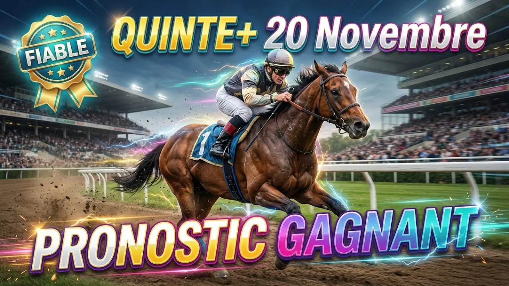

Ciel couvert, dix degrés, et l'odeur du gazon mouillé qui monte des tribunes : le samedi vingt et un novembre a son rendez-vous au temple de l'obstacle parisien. À quinze heures quinze, sixième course de la première réunion, le Prix Marc Antony ouvre le bal des handicaps divisés de l'automne. Listed Race, quatre-vingt-dix-huit mille euros d'allocation, dont quarante-quatre mille cent pour la victoire.
Quatorze poulains et pouliches de quatre ans, tous nés quatre printemps plus tôt, se présentent au départ des trois mille neuf cents mètres de haies. C'est la fête des jeunes sauteurs, mais une fête sérieuse : chacun doit justifier d'au moins une sortie en compétition depuis le premier janvier de l'année précédente pour être admis. Et le passage des trois mille six cents mètres habituels à ce marathon de trois mille neuf cents mètres marque une étape dans leur carrière.
Pour nous, c'est aussi une fête de la lecture : un lot dense, des poids parfaitement étagés, une course référence récente et un terrain annoncé lourd avec un indice de quatre virgule six. Tous les ingrédients sont réunis pour un grand Quinté d'obstacle.
Sur la piste en gazon, corde à gauche, les obstacles en bruyère et en bois exigent une précision millimétrée. Une haie d'Auteuil mesure environ un mètre dix. À l'approche, le centre de gravité du cheval s'élève ; à la réception, les membres antérieurs absorbent une force de plusieurs fois la masse corporelle. Sur un sol profond et collant, l'antérieur s'enfonce, la vitesse de sortie de haie chute, et les postérieurs doivent relancer tout le corps. C'est là que la course se gagne ou se perd.
Avec trois cents mètres de plus que les handicaps classiques de l'automne parisien, la même quantité d'obstacles s'étire sur un effort plus long. La moindre faute, le moindre excès de vitesse en début de parcours, se paie dans l'ultime ligne droite quand l'acide lactique s'installe dans les fibres. Un sauteur bien géré aujourd'hui n'est pas celui qui saute le plus haut, mais celui qui saute juste et qui repart vite.
Gabin Meunier porte soixante-dix kilogrammes, la charge maximale, sur cette pouliche entraînée par Dominique Bressou. Son origine est marquée par la vitesse en plat, mais sa reconversion sur les obstacles a été spectaculaire : deux victoires en trois sorties en haies. D'abord à Clairefontaine-Deauville le vingt-six août, puis avec une facilité déconcertante par sept longueurs sur les haies d'Auteuil le six octobre, dans une deuxième catégorie.
Pour son premier handicap et sa première incursion à trois mille neuf cents mètres, le tandem doit gérer un double défi : la surcharge en terrain lourd et la découverte de la distance. La classe est là, la fraîcheur aussi. C'est notre base, et le favori naturel de la fête.
Présenté par l'association Arnaud Chaillé-Chaillé et Florent Pamart, monté par Gaëtan Masure, il porte soixante-neuf kilos et demi. Il avait remporté un Quinté sur trois mille six cents mètres le six octobre, puis il est tombé à l'avant-dernière haie le vingt-huit octobre alors qu'il s'annonçait menaçant. Sa capacité à franchir avec fluidité et sa faculté d'accélération en font un sujet d'étude prioritaire. À reprendre en confiance : le rachat est le deuxième pilier de notre pronostic.
Sous la responsabilité de François Nicolle et guidé par Angelo Zuliani, même poids de soixante-neuf kilos et demi. Quatre mois d'absence cet été, puis trois parcours de rentrée, et une cinquième place dans le Quinté de référence du vingt-huit octobre sur trois mille six cents mètres. La courbe de forme est nettement ascendante, et la fraîcheur a été préservée. Il vise une place, avec l'ambition de monter plus haut.
Yannick Fouin l'entraîne, Alexandre Chesneau le monte, et la balance affiche soixante-neuf kilos. À trois ans, ce mâle s'était montré très régulier au niveau des courses de Groupe. Mais après six mois d'absence, son retour le vingt-huit octobre s'est soldé par un abandon. Sa forme actuelle reste incertaine. Nous l'écartons.
Nathanaël Ferreira en selle pour Richard Schmidlin, soixante-huit kilos et demi. Ce hongre possède une référence de premier plan sur ce tracé exact de trois mille neuf cents mètres : il y a remporté un handicap similaire le vingt-cinq avril. Mais ses sorties d'automne n'ont pas convaincu et son état de forme demande confirmation. Le souvenir est beau, la forme est à prouver.
Marcel Rolland l'entraîne, Ludovic Philipperon la monte, soixante-huit kilos. Pouliche expérimentée, quatrième d'un Quinté en mars avant six mois d'arrêt. Sa rentrée le vingt-huit octobre s'est concrétisée par une sixième place encourageante, qui laisse entrevoir des progrès. Elle est le sixième cheval de notre sélection, et un bel outsider.
Également préparée par Yannick Fouin, associée à Bryony Frost, soixante-sept kilos et demi. Quatre mois d'arrêt, une rentrée manquée début octobre, puis un net regain de forme avec une quatrième place intéressante dans la course de référence du vingt-huit octobre. La dynamique est bonne, le poids reste correct. Sixième choix de notre pronostic.
Kévin Nabet en selle pour Yannick Fouin, soixante-six kilos. Ce hongre traverse une période remarquable : après un succès dans un handicap, il a remporté le Quinté clé du vingt-huit octobre sur trois mille six cents mètres. Cette victoire lui vaut une pénalité de neuf livres sur l'échelle des valeurs, ce qui est le prix du succès. Mais sa dynamique reste très forte. Il est le deuxième choix de notre pronostic, et le cheval à battre dans cette fête.
Jérôme Delaunay l'entraîne, Thomas Beaurain la monte, soixante-cinq kilos. Victorieuse d'un handicap début novembre sur trois mille six cents mètres, elle a subi cinq livres de pénalisation et affiche un profil encore neuf. La fraîcheur d'une jeune pouliche qui vient de gagner, face à des concurrents plus expérimentés : le pari est séduisant. Nous la plaçons en variable de combinaison.
Entraîné par Noel George et Amanda Zetterholm, monté par Lucas Zuliani, soixante-quatre kilos. Il a signé une belle troisième place le vingt-huit octobre après quatre mois d'absence, ce qui constitue une rentrée très correcte dans une course référence. Il complète notre sélection en huitième position.
Erwan Grall l'entraîne, Théo Chevillard la monte, soixante-quatre kilos également. Victorieuse à Pau l'hiver dernier, elle a effectué sa rentrée à Compiègne en se classant cinquième. Le palmarès est intéressant, la remise en route demeure. Nous la laissons en dehors des huit.
Soixante-trois kilos pour cette lauréate de la deuxième épreuve le vingt-huit octobre. Elle a été pénalisée de cinq livres, ce qui est logique après une victoire. Le gain de la course de référence plaide pour elle, la surcharge et la distance supplémentaire invitent à la prudence. Une outsider à ne pas négliger dans les jeux larges.
Jad Hondier est en selle, soixante-deux kilos et demi, le poids le plus léger du lot avec son voisin de box. Monté pour se racheter, il arrive avec l'envie de prouver quelque chose dans une Course de cette qualité. La légèreté de sa charge peut l'aider dans les derniers mètres, mais le niveau de l'opposition reste élevé.
Baptiste Le Clerc le monte, soixante-deux kilos et demi. Il a été excellent deuxième le vingt-huit octobre derrière Pareil Pareil, dans la course de référence. Cette performance, associée à une charge légère et à une fraîcheur préservée, en fait le quatrième pilier de notre pronostic. Il a les arguments pour jouer la victoire, et pas seulement la place.
Tout part de là. Le vingt-huit octobre à Auteuil, sur trois mille six cents mètres, Pareil Pareil s'est imposé devant Alhunter, Eh Man, Raffles Princess, Normandy Man et Tigress du Berlais. Falcon Jet est tombé à l'avant-dernière haie alors qu'il menait les débats, et Hell Storm a abandonné.
Cette course éclaire tout le Prix Marc Antony. Pareil Pareil arrive avec la dynamique, mais il paie neuf livres. Alhunter a confirmé sa régularité et reste léger. Eh Man et Normandy Man valident leur forme. Raffles Princess et Tigress du Berlais progressent. Falcon Jet, lui, revient avec un rachat à prendre. Et Silaway, absente de cette course, apporte une classe et une fraîcheur neuves, avec le fardeau des soixante-dix kilos en terrain lourd.
Le passage à trois mille neuf cents mètres et l'indice quatre virgule six redistribuent les cartes. La tenue devient reine, la souplesse des sauts décisive, et la gestion de l'effort le vrai luxe de ce samedi d'automne.
Silaway porte la base : deux victoires en trois sorties en haies, dont sept longueurs à Auteuil le six octobre, et une fraîcheur intacte pour son premier handicap. Pareil Pareil est le deuxième choix grâce à sa dynamique, malgré neuf livres de pénalité. Falcon Jet revient d'une chute prometteuse et cherche son rachat. Alhunter a confirmé sa régularité en restant très léger, et Normandy Man affiche une forme ascendante. Pour élargir la fête, Raffles Princess et Tigress du Berlais progressent, tandis qu'Eh Man valide sa rentrée dans la course de référence.
Base : 1 Silaway
Top 5 : 1 - 8 - 2 - 14 - 3
Couplé Placé :
1 Silaway et 8 Pareil Pareil avec 2 Falcon Jet, 14 Alhunter et 3 Normandy Man
Deux sur Quatre :
1 - 8 avec 2 - 14 - 3 - 7
Multi en 5 :
1 - 8 - 2 - 14 - 3
Quinté+ Ordre :
1 - 8 en piliers avec 2 - 14 - 3 - 7 - 6 - 10 en associés
Retrouvez l'analyse vidéo complète sur notre chaîne YouTube Bravo Turf. Abonnez-vous, activez la cloche des notifications et laissez un pouce bleu si ce décryptage vous aide.
Jouez avec modération
Une fête reste une fête si elle demeure maîtrisée. Ne misez jamais plus que ce que vous pouvez vous permettre de perdre. Fixez-vous un budget hebdomadaire et tenez-vous-y. En cas de difficulté, consultez Joueurs Info Service au 09 74 75 13 13.